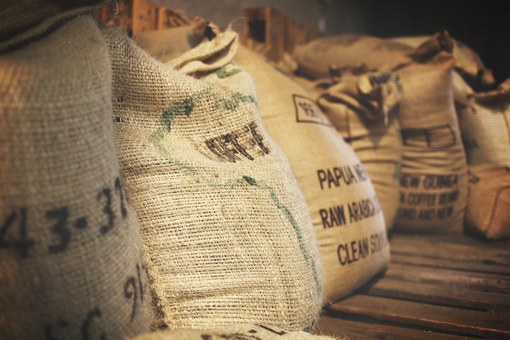

- 특징과 오해
- 역사
- 품종들
- 생산
- 세계 3대 커피?
- 가공 및 제조
- 추출 방법에 따른 커피 종류
- 즐기기 위한 팁과 맛
품종들

원두의 6대 요소인 신맛, 단맛, 쓴맛, 바디감, 아로마, 플레이버[18]는 원두 생산지의 토질과 온도, 강수량, 습도, 해발고도, 로스팅 정도 등에 따라서도 달라지며 여기서는 가장 큰 구분인 로부스타(카네포라), 아라비카, 리베리카 정도로 크게 나뉘었지만 더 파고 들어가면 부르봉(버번이라고도 한다), 카투아이, 티피카 등 온갖 종으로 분화된다. 보통 세세하게 맛을 따지는 아라비카종에서 이런 파생이 생긴다.
로부스타(카네포라)
병충해에 강하고 수확량이 많은 Coffea canephora라는 종에서 수확한 커피. 주로 고도가 600m 이하인 낮은 지역에서 나오는 커피들이다. 해발이 낮은 지역은 기온이 높아서 커피가 빨리 자라기 때문에 상대적으로 병충해에 강한 로부스타 품종을 재배한다. 로부스타(Robusta)의 Robust라는 말 자체가 튼튼하다는 뜻.
생산량은 높지만 그만큼 숙성되는 과정이 줄어들기 때문에 맛이 단순하고 향이 약하다는 평가가 지배적이다. 하지만 이것을 맛없다는 뜻으로 받아들이면 안된다. 아라비카에 비해서 맛의 균일성이 떨어질 뿐이지, 싸구려 커피라고 받아들이면 안 된다. 실제로 몇몇 로부스타는 오히려 아라비카보다 비싼 가격에 책정되기도 한다.
로부스타 단일 품종을 에스프레소, 베리에이션 커피나 드립 커피용으로 쓰는 경우는 요즘은 별로 없다. 대신 가격이 저렴하기 때문에 우리에게 친숙한 커피 믹스나 커피 향 제조, 각종 식품의 원료에 쓰인다. 과거에는 정치, 경제적인 이유로 로부스타 품종도 드립 커피 등으로 많이 마셨지만 요즘은 그다지 마시지 않는다. 그러나 몇몇 품종은 특이한 맛과 향으로 애호가들을 거느리고 있다. 특히 마다가스카르 로부스타는 특유의 강냉이향이 일품. 인도 로부스타는 일부 상품의 경우 스페셜티로 취급받을 정도로 싱글오리진으로도 괜찮은 평가를 받는다. 또한 로부스타 원두의 강한 쓴맛은 베트남식 연유 드립커피와 짝짝꿍이 정말 잘 맞는다.
에스프레소 블렌딩용으로 널리 쓰이며 특히 에스프레소의 종주국인 이탈리아에서는 로부스타 배합이 거의 필수적이다.[19] 여러 가지 원두를 블렌딩 했을 때 원두들의 맛을 하나로 묶어주는 역할을 해주며, 단단한 바디감을 더하고 특유의 카카오향을 가미한다. 또 크레마를 풍성하게 해주기 때문에 에스프레소에서 여러 모로 쓰임새가 많다. 보통 10% 정도를 넣지만 저가용 에스프레소 블렌딩의 경우 그 이상 들어가는 경우도 흔하다.
아라비카 특유의 산미와 쉰내가 싫은 사람은 로부스타를 더 선호하기도 한다. 이런 사람들은 로부스타 생산국으로 여행가면 원두나 가루낸 원두를 귀국할 때 대량으로 사오기도 한다.
최대 생산국은 베트남, 우간다, 인도네시아 같은 곳으로 주로 동남아시아 지역에서 주로 생산된다. 베트남의 경우 과거 아라비카를 생산하였지만, 병충해에 재배를 중단하였다. 이후 로부스타에 주력.
카페인 함량이 아라비카에 비해 높은 편이다. 아라비카는 평균 카페인 함량이 1.2~1.4%이지만 로부스타는 평균 2.0~2.2%다.
아라비카
Coffea arabica라는 종에서 수확한 커피. 인류 역사상 최초로 재배된 종이다. 커피벨트 중에서도 해발 800m 이상의 고산지, 고원에서 주로 생산되며 고급 품종으로 취급된다.
고급 품종 치고는 아라비카 품종의 생산량이 커피시장 전체 70%를 차지한다. 고급 아라비카가 중저가 로부스타보다 더 많을 정도다. 이는 카페에서 파는 커피들이나 개인 취미생활에 쓰이는 커피가 거의 대부분이 아라비카이기 때문이다. 한국의 로부스타 커피믹스를 보면 전혀 그럴 거 같지 않은데 사실 이런 식의 커피 문화는 주로 바쁜 삶을 살아가는 개발도상국에서나 볼 수 있는 풍경이고 선진국 중에서는 한국, 일본 정도만이 커피믹스를 많이 소모하는데 다른 나라는 전혀 그렇지 않다. 아무튼 맛을 즐기기 위해서 커피를 먹는 것이니 만큼 앞으로도 점점 아라비카 커피의 생산량은 증가될 것으로 보인다. 요즘은 커피믹스 등 여타 가공품들에도 아라비카 원두를 사용하는 경우도 있으니 말이다.
맛과 향이 거친 로부스타에 비해 맛이 부드러우며, 균일하다. 로부스타가 쓴맛이 특징이라면, 아라비카는 신맛이 특징이다. 맛의 개성이 강하기 때문에, 맛의 개량과 병충해 방지 등을 위해 여러 세부 품종으로 또 개발되고 나뉘며 이에 따라 맛이 변한다. 대표적으로 티피카[20] 버번, 카투아이, 파카마라, 그리고 현존하는 커피 품종들 중 가장 향미와 풍미가 뛰어나다는 평을 받는 게이샤 등등이 있다. 에티오피아 등 일부 지역의 경우 품종을 세분화하지 않는 상품은 믹스드 헤어룸(Mixed Heirloom)으로 퉁치고 팔기도 한다.
병충해 방지보다는 고산지대 특유의 일교차를 이용하여 커피 생두의 밀도를 높여 품질을 향상시키려는 목적으로 해발 1,000m 이상의 고지대에서 재배한다. 과테말라, 온두라스 등 안데스 산맥에 위치한 일부 커피산지에서는 커피 생두의 등급을 SHB(Strictly Hard Bean), HB(Hard Bean) 등으로 분류하기도 한다. 정작 세계 제1의 커피생산국인 브라질은 주로 평지에 위치한 대형 농장에서 그늘막 하나 없이 기계로 수확하는 등, 아라비카 품종을 재배하긴 하지만 평균적인 품질은 떨어지는 현상을 보여준다. 고품질 아라비카 품종을 생산하는 대표적인 고산지대 국가는 콜롬비아이다.
아라비카의 주요 산지로는 중남미의 브라질(생산량만 봤을 때는 세계 1위), 콜롬비아, 과테말라, 코스타리카[21], 아프리카의 에티오피아, 케냐, 탄자니아 등이 있으며 아시아 및 오세아니아는 인도네시아, 파푸아뉴기니, 하와이의 코나섬(하와이안 코나가 생산 된다.) 등이 있다. 중국의 윈난성은 비교적 최근에서야 커피를 생산하기 시작한 지역이다.
리베리카
장점으로 별로 내세울게 없다보니 로부스타와 아라비카에 밀려 상품화에 실패한 품종. 열매 크기는 셋 중에서 가장 크다. 그리고 길쭉하다. '커피 3대 품종'이니 하는 이론을 이야기 할 때나 등장하지 실제로 만나기는 쉽지 않다. 일반적으로 아라비카나 로부스타보다 더 쓰고 향은 약하다고 알려져 있다. 즉, 일반적으로 맛이 없다. 덕분에 생산량이 적다. 전 세계 커피 생산량의 1~2% 이하로 알려져 있다.
실제로 일반 소비자들은 그 1퍼센트 이하의 생산량을 감안하면서까지도 보기가 힘든데, 생산량이 적으니 품질도 일정하게 유지하기 힘들다보니 상품화가 안되고 대부분 현지에서 소비되기 때문이다. 그러다보니 일반 커피집은 물론이고, 원두 좀 따지는 로스팅하는 전문 커피집에서도 소량 입고조차 힘든 원두이다.
다만 리베리카 원두가 쓰고 향이 약하다는건 일반적으로 그렇다는 말이고, 예외는 존재한다. 리베리카 원두 중에서도 잘 선별된 원두라면 경우에 따라서는 아라비카 커피중 스페셜티 커피에도 밀리지 않는 강렬한 향미를 자랑하면서 쓴맛은 거의 안 느껴지는 경우도 있다. 실제 바리스타 대회에서 리베리카 원두를 사용한 경우도 존재한다. 물론, 이런 녀석은 일반인들 입장에선 원두 구경도 힘들다.
샤리에
2009년 초중반에 발견된 품종. 프랑스의 앙드레 샤리에가 발견했다고 해서 샤리에라고 불린다. 카메룬에서 발견되었는데 놀랍게도 카페인이 없다고 한다. 발견된 지 얼마 되지 않아서인지 아직 상품화 소식은 들려오지 않고 있다.
디카페인 커피와는 다르다. 디카페인 커피는 일반 원두에 카페인을 줄이는(다 없애지는 못하고 대략 98~99% 정도 없앤다) 과정을 거친 것이고, 샤리에는 아예 처음부터 카페인이 없다.
아라부스타
부드러운 맛과 향을 가지는 아라비카와 높은 생산량과 병충해에 강한 로부스타의 장점만을 모아서 교배시킨 아라부스타라는 품종도 있다. 이렇게 재배된 아라부스타는 커피의 품질과 병충해에 대한 저항 개선은 물론 가뭄에 대한 저항성까지 가진다고 한다.
powered by namuwiki